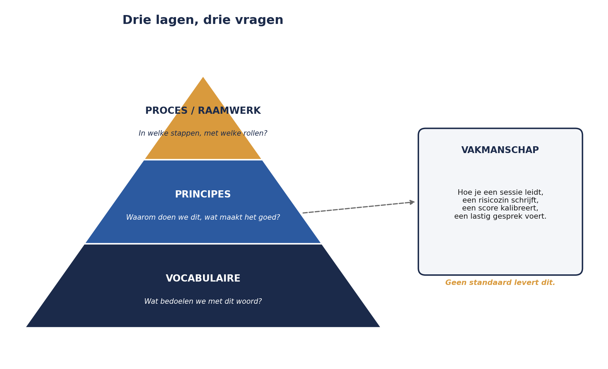

Deel 2 — Standaarden: dezelfde taal, niet dezelfde vraag
Niveau 1 — Fundament · Reader
2.0 Sanne’s tweede probleem
Voordat Sanne Bakhuis ook maar één risico van de WGP 2.0-herstart kan identificeren, loopt ze tegen iets anders aan. Ze zoekt in de bestaande documentatie van Meridiaan naar een risicomanagementkader en vindt er drie. De afdeling Compliance werkt met een schema dat teruggaat op ISO 31000. Een oude projectmethodiekhandleiding citeert losse begrippen uit M_o_R, zonder bronvermelding. En in een oud auditrapport wordt verwezen naar “COSO-componenten” alsof iedereen weet wat dat betekent.
Niemand bij Meridiaan kan haar uitleggen waarom voor welke gekozen is. Ze zijn gewoon naast elkaar blijven bestaan.
Dit deel bestaat om Sanne — en jou — in staat te stellen een weloverwogen keuze te maken, in plaats van toevallig een van drie talen te spreken.
2.1 Drie lagen, niet één
De meest gemaakte fout bij het vergelijken van risicostandaarden is ze behandelen als concurrerende antwoorden op dezelfde vraag. Dat zijn ze niet. Elke standaard opereert op een of meer van drie lagen, en die lagen beantwoorden verschillende vragen.
| Laag | Vraag die hij beantwoordt | Voorbeeld |
|---|---|---|
| Vocabulaire | Wat bedoelen we met dit woord? | “Risico-eigenaar” — is dat degene die beslist, of degene die uitvoert? |
| Principes | Waaróm doen we aan risicomanagement, en wat maakt het goed? | Waardecreatie, geïntegreerd in besluitvorming, aangepast aan de organisatie |
| Proces / raamwerk | In welke stappen, met welke rollen, doe je dit concreet? | Context bepalen → identificeren → analyseren → …, wie is waarvoor verantwoordelijk |
Geen enkele standaard uit dit deel dekt alle drie de lagen even sterk, en geen enkele vertelt je hoe je een identificatiesessie faciliteert of hoe je een risicozin schrijft — dat is vakmanschap, en dat is precies waarom deel 4 en verder van deze cursus bestaan.

2.2 ISO 31000:2018 — de gemeenschappelijke taal
ISO 31000 is met recht het meest geciteerde document in dit deel: het is kort (zestien pagina’s), principieel geschreven, en wereldwijd in tweeëntachtig landen als nationale norm overgenomen. Het regelt vooral de bovenste twee lagen: principes en een globaal raamwerk, met een lichte procesbeschrijving.
Acht principes. ISO 31000 zegt dat risicomanagement pas effectief is als het:
- waarde creëert en beschermt
- geïntegreerd is in alle organisatieprocessen, niet een apart trucje
- onderdeel is van besluitvorming
- onzekerheid expliciet adresseert
- systematisch, gestructureerd en tijdig is
- gebaseerd is op de best beschikbare informatie
- is afgestemd op de organisatie (intern en extern)
- rekening houdt met menselijke en culturele factoren
Kijk naar principe 7 en 8 met de casus in gedachten. Het WGP 2.0-register was niet op maat van Meridiaan gesneden — het was een generiek sjabloon dat bij het projectmanagementpakket hoorde. En niemand heeft ooit gevraagd hoe mensen bij Meridiaan daadwerkelijk omgaan met slecht nieuws. Beide principes werden in de praktijk genegeerd, en beide zijn in deel 20 van deze cursus (cultuur en gedrag) een heel deel waard.
Het raamwerk. ISO 31000 beschrijft daarna hoe risicomanagement in een organisatie wordt ingebed: leiderschap en betrokkenheid, ontwerp (context, rollen, middelen), implementatie, evaluatie, verbetering. Dit is een governancelaag, geen werkinstructie — het gaat over de vraag of risicomanagement een levend onderdeel van de organisatie is, niet over de vraag hoe je één risico beoordeelt.
Het proces. Dit komt in deel 3 uitgebreid aan bod. Voor nu: ISO 31000 beschrijft een cyclus van context bepalen, risicobeoordeling (identificeren, analyseren, evalueren) en risicobehandeling, permanent omgeven door communicatie en monitoring.
Wat ISO 31000 niet doet. Het schrijft geen kansschalen voor, geen sjabloon voor een register, geen rollen met precieze bevoegdheden, en het is uitdrukkelijk niet bedoeld voor certificatie van organisaties (zie deel 1). Wie ISO 31000 openslaat op zoek naar een pasklaar sjabloon, komt bedrogen uit — en dat is met opzet.
Actuele status. ISO 31000:2018 is sinds oktober 2024 officieel in herziening; het traject loopt door 2026 en 2027. Verwacht wordt onder meer een striktere aansluiting op AI-risico (via ISO/IEC 42001) en klimaatrisico (via ISO 14091). Voor deze cursus geldt: controleer bij gebruik in de praktijk altijd of je de meest recente editie raadpleegt.
2.3 ISO 31073:2022 — het woordenboek apart
Tot 2018 stond de begrippenlijst nog ín ISO 31000. Sindsdien is die verhuisd naar een eigen document, ISO 31073, met als reden dat een woordenboek een ander onderhoudsritme heeft dan een richtlijn.
Voor deze cursus is er één praktische les in te trekken: spreek binnen je organisatie hardop af welke definities je gebruikt, en leg dat apart vast van je proces. Bij Meridiaan bleek de term “risico-eigenaar” in drie documenten drie verschillende dingen te betekenen. Dat soort verwarring lost zich niet vanzelf op door een proces te tekenen; het lost zich op door een begrippenlijst te schrijven en te onderhouden, los van de rest.
2.4 COSO ERM 2017 — risico vastgeklonken aan strategie
Waar ISO 31000 een wereldwijde, sectorneutrale richtlijn is, is COSO ERM een Amerikaans product met een herkenbare afkomst: het is geschreven door en voor de context van interne beheersing en financiële verslaggeving (denk aan SOX 404), en dat is in de structuur te zien.
Vijf componenten, twintig principes.
| Component | Kernvraag |
|---|---|
| Governance en cultuur | Wie stuurt risico aan, en welk gedrag beloont de organisatie feitelijk? |
| Strategie en doelbepaling | Past de strategie bij de risicohouding van de organisatie? |
| Prestatie | Welke risico’s raken de strategie en de bedrijfsdoelen, hier en nu? |
| Review en revisie | Presteert het risicomanagement zelf nog goed? |
| Informatie, communicatie en rapportage | Bereikt de juiste informatie de juiste mensen op het juiste moment? |
Het onderscheidende kenmerk van COSO ten opzichte van ISO 31000 is de expliciete koppeling tussen risico en strategie. Waar ISO 31000 zegt “risicomanagement hoort bij besluitvorming” in het algemeen, zegt COSO concreet: risicohouding is een vraag die je bij het vaststellen van de strategie beantwoordt, niet erna.
Voor Meridiaan is dat relevant zodra we in niveau 2 (deel 12) risicobereidheid gaan operationaliseren, en in niveau 3 (deel 24) strategisch risico bespreken. COSO’s begrippen — met name “risk appetite” als koppeling aan strategie — komen daar terug, ook al kiest Meridiaan ISO 31000 als hoofdtaal.
Wat COSO niet doet. Het is minder een operationeel proces dan ISO 31000 en veel minder internationaal-neutraal: buiten de Verenigde Staten, en vooral buiten beursgenoteerde ondernemingen met SOX-verplichtingen, is de herkenning aanzienlijk lager. Voor een Nederlandse pensioenuitvoerder is COSO een nuttig denkkader, geen certificeringsroute en geen dominante taal.
2.5 M_o_R 4 — het perspectievenmodel
M_o_R (Management of Risk: Creating and Protecting Value) is opnieuw iets anders: een compleet uitgewerkte methode, expliciet gepositioneerd als ISO-aligned, met een eigen certificeringsexamen (zie deel 1). Sinds 2024 wordt het door PeopleCert ook onder de merknaam PRINCE2 Risk Management aangeboden — logisch, want M_o_R komt uit dezelfde AXELOS-familie als PRINCE2 en MSP, en dat is precies waarom deze standaard in niveau 2 van deze cursus de hoofdlijn wordt: hij sluit rechtstreeks aan op de begrippen uit de PM-cursus.
Vier principes, sterk verwant aan die van ISO 31000 maar strakker geformuleerd rond waarde: risicomanagement moet waarde creëren en beschermen, past bij de context, betrekt belanghebbenden, en geeft heldere richting (van boven naar beneden, in de vorm van risicobereidheid en toleranties).
Zes perspectieven. Dit is het onderdeel waarin M_o_R zich het duidelijkst onderscheidt, en het onderdeel dat deze cursus het meest gebruikt:
Strategisch, portfolio, programma, project, product, operationeel.
Hetzelfde risico ziet er op elk perspectief anders uit. Neem “afhankelijkheid van één IT-leverancier”: op projectniveau is dat een planningsrisico voor de conversie; op programmaniveau een afhankelijkheid tussen meerdere projecten die dezelfde leverancier gebruiken; op operationeel niveau een continuïteitsrisico voor de dagelijkse mutatieverwerking; op strategisch niveau een vraag over leveranciersconcentratie in het hele IT-landschap. Dit perspectievenmodel is precies waarom niveau 1, 2 en 3 van deze cursus niet drie keer hetzelfde vak herhalen, maar drie keer een ander perspectief op hetzelfde vak toepassen — de structuur van deze hele cursus leunt op dit idee.
Acht processen. Grofweg twee groepen: vier fasen die elkaar opvolgen — identificeren (context en risico’s), beoordelen (schatten en evalueren), plannen, implementeren — en twee activiteiten die daar voortdurend doorheen lopen: communiceren en embedden en reviewen. In deel 3 leggen we dit naast de ISO 31000-procescyclus.
Wat M_o_R niet doet. Het is minder filosofisch dan ISO 31000 en minder strategiegericht dan COSO. Het is, met opzet, een werkmethode. Wie op zoek is naar de reden waarom risicomanagement bestaat, vindt bij ISO 31000 een beter antwoord; wie op zoek is naar een werkbare indeling voor een organisatie met projecten, programma’s én een staande organisatie, vindt bij M_o_R de bruikbaarste.
2.6 Het Orange Book — ter vergelijking, niet als route
Het Britse Orange Book (HM Treasury) is voor deze cursus vooral nuttig als contrastmiddel, niet als certificeringsroute — het is geschreven voor de Britse publieke sector en heeft buiten die context beperkte navolging.
Twee ideeën eruit zijn het onthouden waard, ook zonder het document zelf te gebruiken:
Risicocategorieën als vaste indeling (strategisch, operationeel, financieel, wettelijk/compliance, reputatie, enzovoort) — een vaste lijst voorkomt dat een organisatie stelselmatig één categorie over het hoofd ziet. In deel 4 gebruiken we een vergelijkbare, aan Meridiaan aangepaste indeling bij identificatie.
Het risicovolwassenheidsmodel — een schaal waarlangs een organisatie kan bepalen hoe volwassen haar risicomanagement is, van ad-hoc tot ingebed. Ditzelfde idee komt terug, uitgewerkt, in deel 20 van deze cursus.
Voor een Nederlandse, onder DNB/AFM-toezicht staande instelling is het Orange Book geen route om te volgen. Het is opgenomen omdat het scherp laat zien dat een standaard ook contextgebonden kán zijn — precies het soort keuze dat Sanne voor Meridiaan moet maken.
2.7 Wat geen van deze documenten doet
Vat de vergelijking samen en er blijft één harde conclusie over: geen van deze vijf documenten leert je hoe je een goede identificatiesessie leidt, hoe je een risicozin schrijft, hoe je een score kalibreert, of hoe je een lastig gesprek voert met een bestuurder die een negatief advies niet wil horen. Dat is vakmanschap. Standaarden geven taal, principes en een raamwerk; het vak zelf leer je in de rest van deze cursus.
Dit is ook precies waarom het WGP 2.0-register faalde ondanks dat Meridiaan, op papier, “iets met ISO 31000” deed. Een standaard citeren is geen risicomanagement bedrijven.
2.8 Sanne’s keuze voor Meridiaan
Aan het eind van dit deel maakt Sanne de keuze die deze cursus ook maakt.
ISO 31000 als grondtaal. Het is de in Nederland en de EU meest gangbare referentie, sectorneutraal, en compatibel met wat DNB en AFM in toezichtdocumenten als vanzelfsprekend citeren.
M_o_R 4 als operationeel raamwerk voor projecten en programma’s, met name vanwege het perspectievenmodel — dat sluit direct aan bij hoe Meridiaan is georganiseerd (projecten binnen programma’s binnen een onderneming) en bij de terminologie die collega’s uit de PM-cursus al kennen.
COSO als vergelijkingskader voor de strategische laag, vooral gebruikt zodra risicobereidheid aan strategie wordt gekoppeld (deel 12 en deel 24) — niet als leidend raamwerk.
Het Orange Book niet als route, wel als denkoefening over risicocategorieën en volwassenheid.
Dit is de keuze die door de rest van de cursus wordt aangehouden. Waar een deel een ander accent legt — bijvoorbeeld M_o_R’s zes perspectieven in deel 11, of COSO’s strategiekoppeling in deel 24 — wordt dat expliciet benoemd.
Samenvatting van deel 2
- Standaarden opereren op drie lagen: vocabulaire, principes, proces/raamwerk. Geen enkele dekt alle drie even sterk, en geen enkele levert vakmanschap.
- ISO 31000:2018 (acht principes, een governanceraamwerk, een lichte procesbeschrijving) is de meest gangbare, sectorneutrale grondtaal — in herziening 2026-2027. ISO 31073:2022 bevat het bijbehorende woordenboek.
- COSO ERM 2017 (vijf componenten, twintig principes) koppelt risico expliciet aan strategie, met een Amerikaanse, SOX-gekleurde afkomst.
- M_o_R 4 (vier principes, zes perspectieven, acht processen) is een werkmethode, sinds 2024 ook gemerkt als PRINCE2 Risk Management, en het meest bruikbaar voor de gelaagde structuur project-programma-onderneming.
- Het Orange Book is een Brits publieke-sectordocument, hier gebruikt als contrast — risicocategorieën en een volwassenheidsmodel zijn de bruikbare ideeën, niet het document als geheel.
- Meridiaan kiest ISO 31000 als grondtaal, M_o_R als operationeel raamwerk, COSO als strategisch vergelijkingskader.
Vooruitblik
Deel 3 legt het proces van ISO 31000 en de acht processen van M_o_R naast elkaar, en behandelt de stap die bij WGP 2.0 volledig ontbrak: context en criteria vaststellen, vóórdat er ook maar één risico wordt geïdentificeerd.